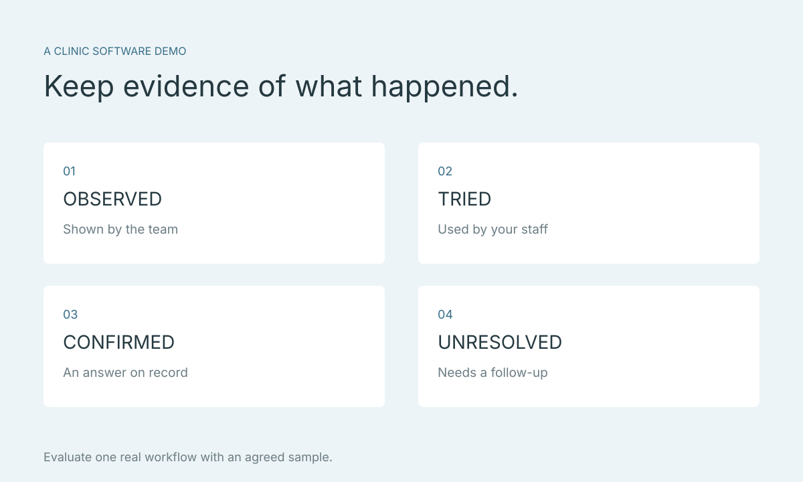

เลือกซอฟต์แวร์จำลองใบหน้าสำหรับคลินิก: เช็กลิสต์ดูเดโมให้ได้คำตอบ
เดโมที่ดูคล่องบนเครื่องของผู้สาธิตอาจยังไม่ตอบว่าทีมคลินิกจะใช้งานอย่างไร วิธีประเมินที่เป็นประโยชน์คือเตรียมงานหนึ่งชิ้นที่อยากทำจริง และขอเห็นตั้งแต่ต้นทางถึงจุดที่แพทย์ใช้ประกอบการปรึกษา บทความนี้เสนอวิธีจดหลักฐานจากเดโม ไม่ใช่การจัดอันดับผลิตภัณฑ์หรือรับรองว่าระบบใดมีฟังก์ชันทั้งหมด
ประเด็นสำคัญ
- ประเมินจากงานหนึ่งชิ้นที่คลินิกต้องทำจริง
- จดสิ่งที่ได้เห็น แยกจากสิ่งที่ยังต้องยืนยัน
- ใช้ขั้นตอนถัดไปที่ตรวจผลได้ก่อนเริ่มใช้ทั้งคลินิก
กำหนดหนึ่งงานและผลที่อยากได้ก่อนนัด
ตัวอย่างโจทย์คือ “นำโมเดลจากแอปที่คลินิกใช้อยู่มาเปิดดู และอธิบายความต้องการให้แพทย์ฟังได้” ระบุว่าใครเป็นผู้ทำแต่ละช่วง อุปกรณ์ใดที่มีอยู่ และปัจจุบันติดปัญหาตรงไหน ข้อมูลนี้ทำให้เดโมมุ่งไปที่งานของคุณ
แยกสิ่งจำเป็นต่อการเริ่มใช้จากสิ่งที่อยากมีภายหลัง เช่น ทีมอาจต้องยืนยันการนำเข้าเป็นอันดับแรก ก่อนถามความสามารถอื่น อย่าตัดสินจากจำนวนชื่อฟีเจอร์โดยยังไม่เห็นว่าช่วยขั้นตอนที่ตั้งไว้ได้อย่างไร

- งานที่ต้องทำ: เขียนให้จบในหนึ่งประโยค
- ผู้ใช้งาน: ระบุบทบาทและช่วงที่รับงาน
- ข้อที่ต้องยืนยัน: เลือกคำถามที่ถ้าไม่ตอบจะเริ่มใช้ไม่ได้
ขอเห็นการนำเข้าจากชุดข้อมูลที่ตกลงกัน
สำหรับ Faceliora Clinic โมเดล 3D มาจากแอปภายนอก ต้องถามให้ชัดว่าชุดแอป อุปกรณ์ เวอร์ชัน และไฟล์ส่งออกที่เสนอได้รับการยืนยันหรือยัง การเห็นตัวอย่างจากอีกแอปเปิดสำเร็จไม่ได้รับรองว่าไฟล์ของคลินิกจะเข้ากันได้
ตกลงตัวอย่างที่เหมาะสมกับทีมก่อนส่งไฟล์ แล้วขอให้ผู้สาธิตอธิบายว่าตรวจความสำเร็จของการนำเข้าอย่างไร และถ้าไม่สำเร็จต้องเก็บข้อมูลอะไรไปสอบถาม อย่าเปลี่ยนนามสกุลไฟล์เพื่อพยายามให้ระบบยอมรับ
ให้ผู้ใช้งานจริงลองอธิบายจากหน้าจอ
หลังดูการสาธิต ขอให้คนที่จะใช้ระบบลองทำงานที่ตกลงกันเมื่อเงื่อนไขอนุญาต ระหว่างลองให้แยกสิ่งที่ทำได้เอง สิ่งที่ต้องมีผู้สอน และขั้นตอนที่ยังไม่เข้าใจ การบันทึกแบบนี้ช่วยวางแผนฝึกทีมได้ตรงเรื่อง
ในช่วงอธิบายภาพ ให้ลองถามว่าคนอ่านแยกต้นฉบับกับภาพที่ปรับแล้วได้หรือไม่ และรู้หรือไม่ว่าภาพกำลังช่วยตอบคำถามอะไร ความสมจริงของภาพไม่ใช่หลักฐานความแม่นยำทางคลินิก และการทำงานได้ในเดโมไม่ใช่หลักฐานว่าช่วยเพิ่มยอดขายหรือผลการรักษา
แยก “ได้เห็น” ออกจาก “ได้รับคำอธิบาย”
ใช้บันทึกสี่สถานะ: ได้เห็นหรือได้ลอง ได้รับคำอธิบาย ต้องยืนยันเพิ่มเติม และไม่อยู่ในขอบเขต ทุกข้อควรมีผู้ตอบกับวันที่ ถ้าความสามารถยังเป็นแผนพัฒนา ให้บันทึกตามนั้น ไม่ย้ายไปอยู่ในรายการที่พร้อมใช้
ตัวอย่างเช่น “เปิดไฟล์ตัวอย่างที่ตกลงไว้ — ได้เห็น” กับ “ใช้กับโทรศัพท์ทุกรุ่น — ยังไม่ยืนยัน” เป็นคนละข้อ ควรเก็บหลักฐานหรือคำตอบตามที่ผู้ให้บริการตกลงให้ใช้ ไม่บันทึกหน้าจอที่มีข้อมูลคนจริงโดยไม่จัดการสิทธิ์ก่อน
| ประเด็น | สิ่งที่ควรจด |
|---|---|
| ข้อมูลต้นทาง | แอป อุปกรณ์ เวอร์ชัน และตัวอย่างที่ใช้ |
| การใช้งาน | งานที่ลอง ผลที่เห็น และขั้นตอนที่ต้องมีคนช่วย |
| การฝึกทีม | ผู้รับผิดชอบ วิธีสอน และคำถามที่ค้าง |
| ข้อมูลและขอบเขต | คำตอบที่ยืนยันแล้ว กับรายการที่ต้องถามต่อ |
คุยเรื่องการฝึกทีมและเส้นทางข้อมูลให้จบ
ถามว่าเริ่มต้นอย่างไร ใครติดต่อได้เมื่อมีปัญหา และคำตอบใดต้องขอเพิ่มเติมจากผู้ให้บริการแอปต้นทาง ให้เวลาทีมทบทวนการส่งต่องานด้วย ไม่ใช่ประเมินเฉพาะคนที่ใช้คอมพิวเตอร์เก่งที่สุด
ก่อนใช้ข้อมูลผู้รับบริการจริง ตรวจวัตถุประสงค์ วิธีส่งไฟล์ ผู้เข้าถึง และระยะเวลาเก็บกับแต่ละฝ่าย รายการนี้เป็นงานที่คลินิกต้องยืนยันตามบริบท ไม่ใช่ข้อสรุปว่าระบบมีพื้นที่จัดเก็บ ระบบสิทธิ์ หรือการแชร์แบบใดอยู่แล้ว
หลังเดโม: เลือกขั้นตอนถัดไปที่ตรวจได้
จบด้วยรายการสั้นสามอย่าง: สิ่งที่ยืนยันแล้ว สิ่งที่ยังต้องตอบ และผู้รับผิดชอบของขั้นตอนถัดไป ถ้าชุดไฟล์ยังไม่ยืนยัน ก็เริ่มจากตรวจความเข้ากันได้ ถ้าทีมยังอธิบายภาพไม่ได้ ก็เริ่มจากฝึกขั้นตอนนั้น ไม่มีเหตุผลต้องข้ามไปเริ่มใช้ทั้งคลินิกทันที
หากกำลังประเมิน Faceliora Clinic ให้ยึดขอบเขตของผลิตภัณฑ์นั้น และนัดคุยเพิ่มเติมเมื่อข้อจำเป็นยังไม่ได้คำตอบ